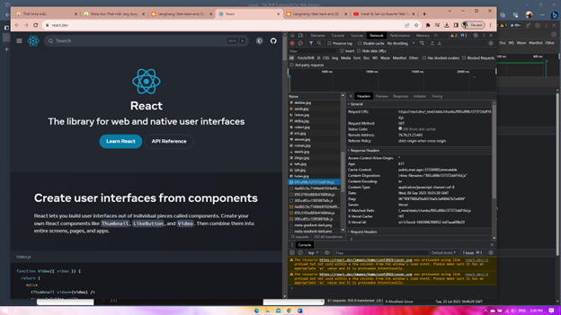

Laravel
ReactJS


Rendering là một thuật ngữ tiếng Anh có nghĩa là kết xuất đồ họa, hay quá trình tạo ra hình ảnh từ dữ liệu 3D bằng các thuật toán và chương trình ứng dụng
- Server side rendering (SSR) là một cơ chế hiển thị các ứng dụng web trên máy chủ và sau đó gửi phản hồi và nội dung lại cho người dùng1. Theo cơ chế này, hầu hết các xử lý logic đều ở phía máy chủ, bao gồm việc truy xuất dữ liệu từ cơ sở dữ liệu, render HTML và định tuyến chuyển trang234. Trình duyệt của người dùng chỉ có nhiệm vụ hiển thị HTML đã được render sẵn
- Client side rendering (CSR) là một phương pháp render (kết xuất) trang web mới hơn, đối với phương pháp này JS được thực thi ở phía trình duyệt thông qua các Javascript framework12. Quá trình render thay vì ở trên máy chủ như Server Side Rendering thì nó render ngay trên trình duyệt134. Khi người dùng yêu cầu truy cập một trang web, thì trình duyệt sẽ nhận dữ liệu thô từ máy chủ và lắp ráp các dữ liệu đó để hiển thị cho người dùng cuối
- Mỗi phương pháp đều có ưu nhược điểm riêng nên việc phát triển ứng dụng bằng phương pháp nào thì tùy thuộc vào mục tiêu, tính năng, người dùng và ngân sách.
Ví dụ: Nếu muốn xây dựng 1 trang web đơn trang có nhiều tương tác và có nội dung động thì nên sử dụng CSR.
Nếu muốn xây dựng 1 trang web bán hàng thì nên sử dụng SSR